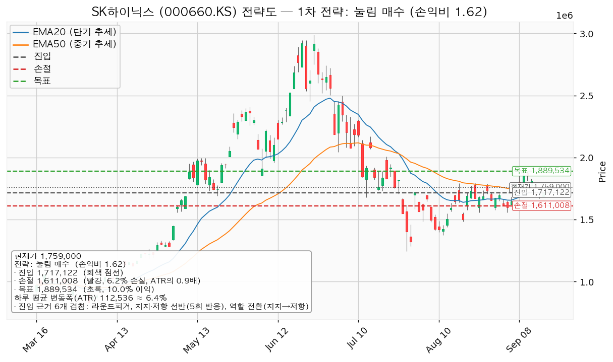
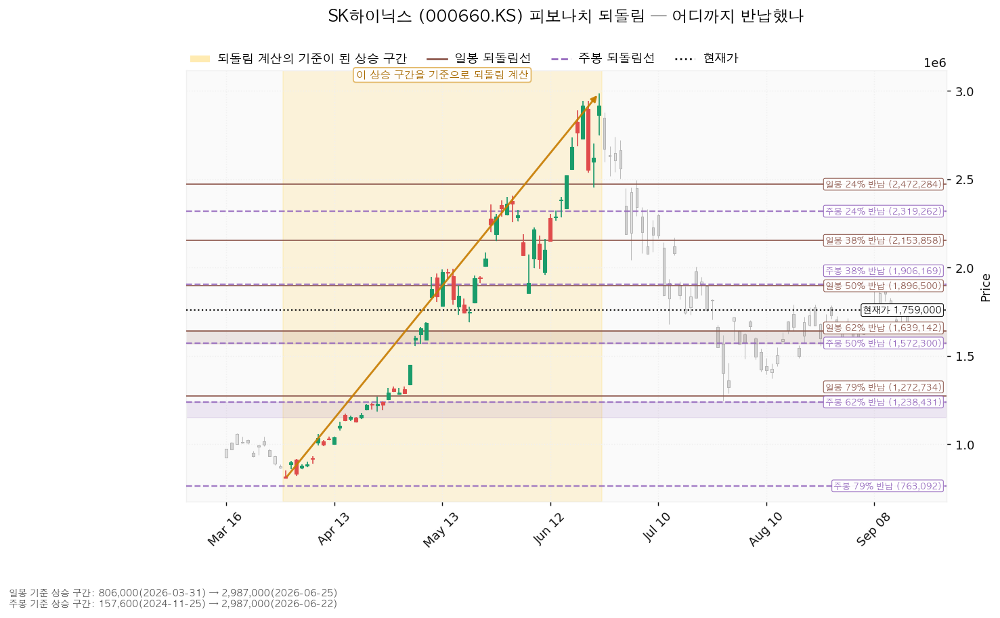
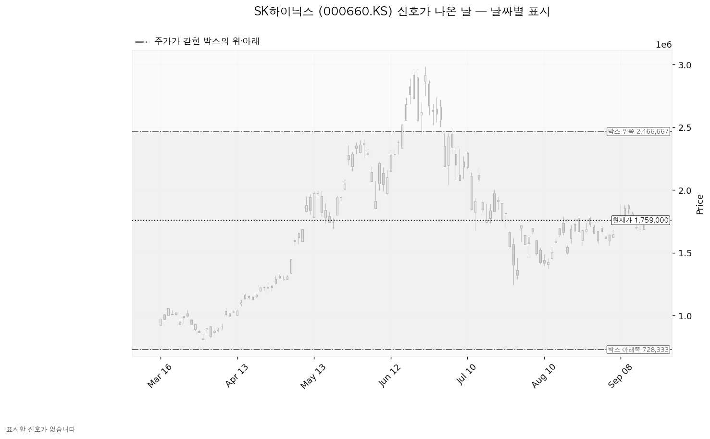
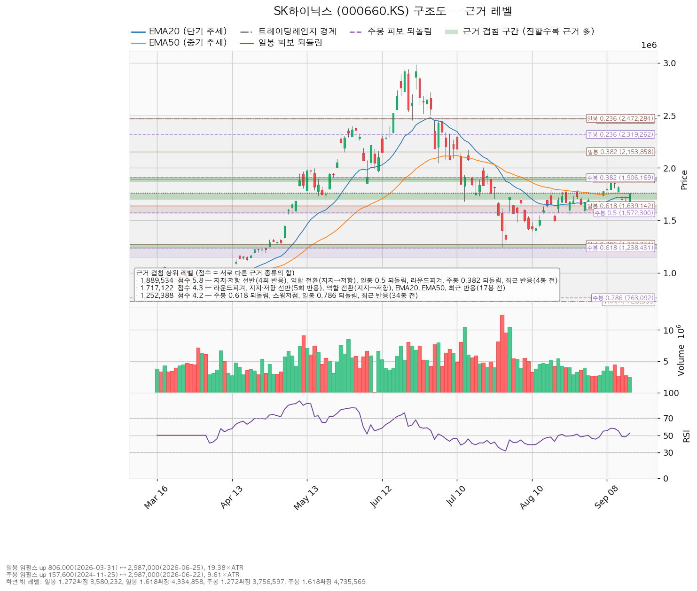

SK하이닉스(000660.KS)는 D램·HBM·낸드 등 메모리 반도체를 설계·생산하는 한국 기업이며, 실적이 메모리 가격 사이클에 크게 연동됩니다.
| 구분 | 가격 | 판정 방식 | 현재가 대비 | 상태 |
|---|---|---|---|---|
| 회복선(구조 기준선) | 1,794,000원 | 일봉 종가로 회복한 뒤 되돌림에서 지지되는지 — 이번 계획의 진입 자리가 아닙니다(아래 설명) | +1.99% (0.31 ATR) | 회복 대기 |
| 집행 손절 | 1,611,008원 | 장중 도달 시 즉시 청산 — 1,717,122원에 되돌림 진입한 경우에만 유효하며, 미진입 상태에서는 아무 의미가 없습니다 | -8.41% (1.32 ATR) | 미진입 |
| 관망 종료 기준 | 1,639,142원 | 일봉 종가가 아래로 마감 / 또는 2026-10-27 실적 | -6.81% (1.07 ATR) | 유지 중 |
| 확인선 | 1,889,534원 | 일봉 종가 돌파 후 되돌림에서 지지 확인 | +7.42% (1.16 ATR) | 미돌파 |
| 폐기선(구조) | 728,333원 | 이탈 → 3거래일 내 회복 실패 → 반등이 저항으로 확인 | -58.59% (9.16 ATR) | 유지 중 — 실무상 작동하지 않음 |
폐기선까지의 거리는 하루 평균 변동폭의 9.16배로 3배를 크게 넘습니다. 가격 기준 무효화로 쓸 수 없으므로 미진입자가 실제로 볼 선은 관망 종료 기준 1,639,142원이고, 논지 쪽 무효화는 2026-10-27 실적 조건으로 따로 겁니다.
직전 리포트 이후 거래일은 2026-09-16 하루뿐이며, 종가는 1,690,000원에서 1,759,000원으로 +4.08% 올랐습니다(시가 1,686,000원, 고가 1,760,000원, 저가 1,686,000원). 직전 리포트는 9월 15일 현재가를 1,688,000원으로 적었으나 그날 최종 종가는 1,690,000원이었습니다 — 장 마감 직후 조회 시점의 값이었고, 이 리포트의 비교는 최종 종가 1,690,000원 기준으로 다시 계산했습니다.
① 당시 트리거의 성적표 — 진입 조건이 충족됐습니다.
| 직전 리포트가 건 가격 | 이후 실제(9월 16일) | 판정 |
|---|---|---|
| 셋업 진입 겸 회복선 1,720,275원 (종가 회복) | 종가 1,759,000원 | 충족 |
| 목표 1,889,534원 (장중 도달) | 고가 1,760,000원 | 미도달 |
| 집행 손절 1,610,267원 (장중 도달) | 저가 1,686,000원 | 미도달 |
| 분할안 1차 목표 1,794,000원 (장중 도달) | 고가 1,760,000원 | 미도달 |
| 관망 종료 1,639,142원 (종가 이탈) | 종가 1,759,000원 | 미충족 — 유지 중 |
| 2단계 경고선 1,604,775원 (종가 이탈) | 종가 1,759,000원 | 미충족 |
| 폐기선 1,368,333원 (종가 이탈) | 종가 1,759,000원 | 미충족 — 유지 중 |
진입 조건 충족과 같은 날이라 목표·손절 중 어느 쪽에 먼저 닿는지는 아직 진행 중입니다.
진입 조건은 충족됐는데 체결 장부에는 이 매수 기록이 없습니다. 장부에 남은 거래는 2026-07-01 매수 2주(평단 2,132,667원) 하나뿐입니다. 계획과 집행이 벌어진 상태이므로, 9월 16일 종가 부근에서 실제로 매수하셨다면 수량·단가·날짜를 봇에 보고해 주십시오. 보고가 들어오면 그 포지션의 손절은 직전 리포트가 등록한 1,610,267원이 그대로 유효합니다. 매수하지 않으셨다면 아래 되돌림 계획 하나만 남습니다.
② 좌표의 이동 — 박스 창이 90봉에서 180봉으로 바뀌면서 폐기선이 크게 내려갔습니다.
| 항목 | 2026-09-15 | 2026-09-16 | 왜 움직였나 |
|---|---|---|---|
| 현재가 | 1,690,000원 | 1,759,000원 (+4.08%) | 시가 부근이 당일 저가였고 고가 1,760,000원에 근접해 마감 |
| 하루 평균 변동폭(ATR) | 115,500원 | 112,536원 (-2.57%) | 하루 폭이 더 줄어 주가의 6.40% |
| 박스 | 90봉 / 1,368,333~2,466,667원 | 180봉 / 728,333~2,466,667원 | 아래 설명 |
| 회복선 | 1,720,275원 | 1,794,000원 (+4.29%) | 현재가가 1,705,000~1,755,561원 구간 위로 올라서면서, 위에서 처음 만나는 저항이 스윙고점·선반 구간으로 바뀜 |
| 대표 셋업 | 회복 매수 | 되돌림 매수 | 현재가가 진입 후보 구간 위로 올라와, 회복을 기다리는 계획에서 눌림을 기다리는 계획으로 바뀜 |
| 셋업 진입 | 1,720,275원 | 1,717,122원 (-0.18%) | 같은 겹침 구간(1,700,000~1,755,561원)이며 EMA 이동분만 반영 |
| 셋업 손절 | 1,610,267원 | 1,611,008원 (+0.05%) | 밀어내는 기준 구간(1,639,142~1,678,000원)이 같습니다 |
| 셋업 목표 | 1,889,534원 | 같습니다 | 겹침 5.8점 구간이 그대로 유지 |
| 손익비 | 1:1.54 (0.95 ATR) | 1:1.62 (0.94 ATR) | 진입이 3,153원 내려오고 손절이 741원 올라와 위험 폭이 소폭 축소 |
| 구조 증명도 | 회복 확인형 1.0 | 선취형(구조 미확인) 0.7 | 저항 회복을 확인하고 사는 방식에서, 확인 전에 눌림을 먼저 잡는 방식으로 바뀜 |
| 확인선 | 1,889,534원 | 같습니다 | 같은 겹침 5.8점 구간 |
| 관망 종료 기준 | 1,639,142원 | 같습니다 | 일봉 62% 되돌림선이며 값이 바뀌지 않았습니다 |
| 폐기선 | 1,368,333원 (2.77 ATR) | 728,333원 (9.16 ATR) | 박스 창이 바뀌면서 박스 아래쪽이 따라 내려감 |
| RSI(14) | 48.11 | 52.23 | 중립 구간 유지 |
| 신호 | 없음 | 없음 | 같습니다 |
| 국면 후보 | 미확정 | 미확정 | 같습니다 |
박스 창이 바뀐 이유는 수치로 설명됩니다. 엔진은 40·90·180봉 세 창을 모두 시험해 가격이 가장 잘 지킨 창을 고릅니다. 직전 산출에서 180봉 창은 구간 초반 대비 후반 종가가 박스 폭의 60.1%만큼 이동해 횡보가 아닌 추세로 판정돼 후보에서 빠졌고, 그래서 90봉 창이 선택됐습니다. 이번 산출에서 그 이동분이 58.6%로 낮아지며 180봉 창이 박스로 인정됐고, 종가가 박스 안에 머문 비율이 88.9%로 90봉 창의 86.7%보다 높아 180봉이 선택됐습니다. 그 결과 박스 아래쪽이 1,368,333원에서 728,333원으로 내려갔습니다. 가격이 그만큼 나빠진 것이 아니라 박스를 재는 창이 바뀐 것이며, 그래서 이번 폐기선은 실무에서 쓸 수 있는 거리가 아닙니다. 진입·손절·목표는 박스 경계가 아니라 근거 겹침 구간에서 고르므로 이 변화의 영향을 받지 않았습니다.
③ 판단이 바뀌었는지 — 결론은 관망으로 같고, 기다리는 방향이 반대로 바뀌었습니다. 직전에는 현재가보다 +1.91% 위에서 회복을 확인하고 사는 계획이었고, 이번에는 -2.38% 아래로 눌릴 때 사는 계획입니다. 그 대가로 구조 증명도가 회복 확인형(1.0)에서 선취형(0.7)으로 내려갔습니다 — 진입가는 유리해졌지만 구조가 증명되기 전에 잡는 방식이라 실패 확률이 높습니다. 손익비는 1.54에서 1.62로 소폭 올랐고 목표와 관망 종료 기준은 그대로입니다.
| 항목 | 값 |
|---|---|
| 보유 수량 | 2주 (최초 매수 2026-07-01) |
| 평단 | 2,132,667원 |
| 평가액 | 3,518,000원 |
| 평가손익 | -747,334원 (-17.52%) |
이 2주는 이번 셋업과 무관한 기존 포지션이며, 집행 손절 1,611,008원은 되돌림 진입분에만 적용합니다. 기존 보유분은 아래 세 시나리오의 행동 규칙을 따릅니다.
| 가격 | 2주 기준 손익 | 평단 대비 |
|---|---|---|
| 셋업 목표 1,889,534원 | -486,266원 | -11.40% |
| 현재가 1,759,000원 | -747,334원 | -17.52% |
| 셋업 진입 1,717,122원 | -831,091원 | -19.48% |
이번 목표 1,889,534원에 닿아도 기존 2주는 평단 대비 손실 구간입니다.
| 항목 | 값 |
|---|---|
| 현재가 | 1,759,000원 (전일 대비 +4.08%) |
| 당일 고가 / 저가 | 1,760,000원 / 1,686,000원 |
| EMA20 (최근 20일 평균 흐름) | 1,720,047원 — 현재가는 +2.27% 위 (0.35 ATR) |
| EMA50 (최근 50일 평균 흐름) | 1,755,561원 — 현재가는 +0.20% 위 (0.03 ATR) |
| RSI(14) (0~100, 최근 상승·하락 강도) | 52.23 |
| ATR (하루 평균 변동폭) | 112,536원 = 주가의 6.40% |
| 국면 | 횡보 레인지(구조 유지 — 하단 사수 조건부) |
| 6월 고점 2,987,000원 대비 | -41.11% |
현재가는 이동평균 두 개를 모두 위로 지난 자리이며, EMA50 위로는 하루 평균 변동폭의 0.03배에 불과해 아직 붙어 있습니다. 하루 만에 두 이평을 함께 넘은 봉이라 되돌림에서 다시 시험받을 자리이고, 이번 계획이 그 되돌림을 진입으로 씁니다.
어느 구간을 보고 박스로 판정했는가. 조회된 일봉은 727개이며, 40·90·180봉 세 창을 모두 시험해 최근 180봉(약 아홉 달)을 골랐습니다. 이 창에서 종가가 박스 안에 머문 비율은 88.9%(90봉 86.7%, 40봉 87.5%), 박스 폭은 하루 평균 변동폭의 15.45배입니다. 박스 폭 15.45배는 실행 기준으로 쓰기에 지나치게 넓으므로, 이 리포트의 진입·손절·목표는 박스 경계가 아니라 근거 겹침 구간에서 고릅니다.
박스 안쪽에서 무슨 일이 있었나. 가격은 직전 170,400~621,000원 구간에서 위로 올라와 이 박스로 진입했습니다. 위에서 내려온 것이 아니라 아래에서 올라온 박스이므로, 재축적과 분산이 같은 모양을 그립니다. 안쪽에서 일어난 일로 갈라야 합니다.
박스 창이 180봉으로 바뀌면서 이 안쪽 관측치도 직전 리포트와 다른 구간을 재고 있습니다. 위 세 번의 하단 테스트는 728,333원 부근, 즉 현재가에서 하루 평균 변동폭의 9배 넘게 떨어진 옛 구간의 사건입니다. 수 주 시계의 집행 근거로는 아래 `지지·저항` 표의 겹침 구간이 더 가깝습니다.
셋업은 둘 산출되었고, 집행하는 것은 하나입니다.
| 셋업 | 진입 | 손절 | 목표 | 손익비 (손절 폭) | 구조 증명도 | 엣지의 종류 | 판정 |
|---|---|---|---|---|---|---|---|
| pullback_long (되돌림 매수) | 1,717,122원 | 1,611,008원 | 1,889,534원 | 1:1.62 (0.94 ATR) | 선취형(구조 미확인, 0.7) | 평균회귀 — "지지로 눌릴 때 산다" | 이번 계획 |
| breakout_long (돌파 매수) | 1,794,000원 | 1,671,866원 | 1,889,534원 | 1:0.78 (1.09 ATR) | 돌파 확인형(1.0, 최고 등급) | 모멘텀 — "저항을 돌파하면 그 방향이 이어진다" | 패스 (손익비 1 미만) |

대표 셋업 선정 사유는 *"손익비 1.62 × 구조 증명도(선취형(구조 미확인)) × 근거 겹침 4.3점으로 선정. 구조가 증명되기 전에 되돌림에서 먼저 잡는다 — 진입가는 유리하나 실패 확률이 높다"* 입니다. 손익비 1등과 대표 셋업이 같은 셋업이지만, 구조 증명도는 낮은 쪽을 골랐다는 트레이드오프가 있습니다 — 증명도가 최고 등급(1.0)인 돌파 매수는 손익비가 0.78로 1에 못 미쳐 집행 대상이 아닙니다. 구조가 먼저 증명되기를 기다리면 손익비가 1 아래로 떨어지고, 손익비를 취하면 증명 전에 사게 되는 구조입니다.
| 되돌림 매수 상세 | 값 |
|---|---|
| 진입 근거 겹침 | 4.3점 / 1,700,000~1,755,561원 — 라운드피겨 1,700,000원, 5회 반응한 지지·저항 선반, 역할 전환(지지→저항), EMA20, EMA50. 17거래일 전 실제 반응이 나온 자리라는 가산이 붙습니다 |
| 손절 근거 | 근거 겹침 구간(1,639,142~1,678,000원, 2.7점 — 일봉 62% 되돌림, 스윙저점, 32거래일 전 반응) 바로 아래. 구간 안쪽이 아니라 그 아래로 밀어낸 값이라 손익비가 그만큼 낮게 잡혀 있습니다 |
| 목표 근거 겹침 | 5.8점 / 1,872,500~1,906,169원 — 4회 반응 선반, 역할 전환(지지→저항), 일봉 50% 되돌림, 라운드피겨 1,900,000원, 주봉 38% 되돌림, 4거래일 전 반응. 이 종목에서 가장 두꺼운 자리입니다 |
| 손절 폭 | 106,114원 = 진입가의 -6.18%, 하루 평균 변동폭의 0.94배 |
| 진입~목표 거리 | 172,412원 = 하루 평균 변동폭의 1.53배 |
손절 폭과 손익비를 함께 봅니다. 손절 1,611,008원은 아래쪽 겹침 구간 바로 밑에 놓은 구조적 손절 그 자체이며, 하루 변동폭 안쪽으로 조인 값이 아닙니다(0.94배). 이번 산출에는 구조적 손절 기준의 별도 손익비가 따로 나오지 않았습니다 — 집행 손절과 구조적 손절이 같은 가격이기 때문입니다. 손익비 1.62는 손절을 좁혀서 만든 값이 아닙니다.
이 셋업 유형의 성격. 엔진이 붙인 설명은 *"승률이 높고 이익 폭이 작은 유형. 저항에서 전량 청산이 정합적이다"* 이며, 평균회귀형 되돌림 매수의 일반적 성격을 말한 것이지 이 엔진에서 측정한 수치가 아닙니다. 백테스트가 없으므로 승률에 숫자를 붙이지 않습니다. 평균회귀 전제에 저항 목표(1,889,534원)에서 전량 청산하는 규칙이 붙어 있어 두 요소가 서로 어긋나지 않습니다.
패스한 돌파 매수의 상세. 진입 1,794,000원의 근거는 4개 겹침 3.5점(스윙고점, 4회 반응 지지·저항 선반, 라운드피겨 1,800,000원, 17거래일 전 반응)이고, 손절 1,671,866원은 겹침 4.3점 구간(1,700,000~1,755,561원) 바로 아래에 놓입니다. 손절 폭은 진입가의 -6.81%로 하루 평균 변동폭의 1.09배이며, 목표가 되돌림 매수와 같은 1,889,534원이라 손익비가 1:0.78에 그칩니다. 중간 목표 없이 1,889,534원에서 100% 청산하는 분할 없이 단일 목표 구성이라 본전 손절 이동 단계도 없습니다. 손익비가 1 미만이므로 패스합니다.
청산은 목표에서 전량입니다. 진입에서 목표까지가 하루 평균 변동폭의 1.53배로 2배에 못 미치므로 트레일링이나 단계별 청산을 권하지 않습니다(이 2배는 관행적 기준이지 정설은 아닙니다). 목표 1,889,534원을 일봉 종가로 넘어서는 구간은 이 포지션의 연장이 아니라 새 셋업으로 다시 잡습니다. 참고로 분할 청산안도 함께 산출됐습니다 — 1차 1,794,000원에서 50% 익절(그 구간 손익비 0.72) → 잔여분 손절을 진입가 1,717,122원(본전)으로 이동 → 2차 1,889,534원에서 나머지 50% 청산(손익비 1.62)이며, 전 구간 손익비는 1.17, 1차 익절 후 본전 손절에 걸릴 때의 하한 손익비는 0.36입니다. 위 이유로 이번 집행 계획에는 쓰지 않습니다.
비중. 1회 매매에서 계좌의 1%를 잃는 것을 한도로 하면 손절 폭 6.18%에서 계좌의 16.2%를 실어야 하지만, 한 종목에 계좌의 13%를 넘기지 않는 규칙에 따라 13%로 제한합니다. 13% 비중에서 손절에 닿으면 계좌 손실은 -0.80%입니다. 주당 위험은 106,114원입니다.
도구 적합성. 하루 평균 변동폭이 주가의 6.40%로 8% 기준 아래이고, 손절 폭 6.18%는 하루 평균 변동폭의 0.94배입니다. 하루치 움직임보다 조금 좁은 손절이므로 하루 크게 흔들리면 논지와 무관하게 체결될 수 있다는 점은 남아 있습니다. 시계는 수 주 기준입니다.
셋업 무효화 기준선은 진입가와 같은 1,717,122원입니다(위 폐기선 728,333원과는 다른 가격이며 섞어 쓰지 않습니다).
| 단계 | 트리거 | 의미 | 행동 |
|---|---|---|---|
| ① 관찰 | 일봉 종가가 1,717,122원 아래로 마감 | 구조 이탈 시작 — 되돌아 올라오면 속임수 하락일 수 있어 아직 무효가 아닙니다 | 신규 진입만 중단. 집행 손절은 그대로 둡니다 |
| ② 경고 | 이탈 후 3거래일 안에 1,717,122원을 종가로 회복하지 못함, 또는 그 전에 일봉 종가가 1,604,586원 아래로 마감(하루 평균 변동폭의 1배만큼 더 밀림) — 둘 중 먼저 오는 쪽 | 되돌림 지지 상실 가능성이 우세해짐 | 잔여 비중 축소. 반등이 나오면 이 가격에서의 반응을 확인합니다 |
| ③ 무효 | 반등이 1,717,122원에서 막히고 그 아래로 되밀림(지지가 저항으로 전환) | 셋업 폐기 — 구조 해석이 틀린 것으로 확정 | 포지션 정리. 새 구조가 만들어질 때까지 관망 |
가격을 한 번 내준 것은 1단계일 뿐입니다. 집행 손절 1,611,008원은 이 판정과 무관하게 별도로 작동하며, 장중 일시 이탈은 어느 단계에도 해당하지 않습니다.
| 시나리오 | 조건 | 구조 해석 | 행동 |
|---|---|---|---|
| 상승 전환 | 1,794,000원 종가 회복 후 지지 → 1,889,534원 종가 돌파 | 속임수 하락 확인 → 강세 신호 → 되돌림 지지 → 상승 국면 | 1,717,122원 되돌림 진입분을 계좌의 13% 한도로 유지하고, 1,889,534원 종가 돌파 시에는 새 셋업으로 다시 잡습니다. 1,794,000원 돌파를 그 자리에서 사는 것은 손익비 0.78이라 하지 않습니다 |
| 횡보 지속 | 728,333원을 지키며 1,889,534원 아래에서 박스 유지 | 구조는 유지 — 매물 소화에 시간이 필요한 국면이며 부정적 신호가 아닙니다 | 1,717,122원까지 눌릴 때만 진입하고 그 위에서는 대기합니다. 박스 안쪽 세 가지를 추적합니다: 지지 테스트마다 매도 거래량이 줄어드는지(현재 증가), 저점이 절상되는지(현재 절상), 상승할 때 거래량이 실리는지(현재 상승봉 대 하락봉 거래량비 0.94). 기존 2주는 보유 유지 |
| 시나리오 폐기 | 728,333원 이탈 후 3거래일 내 회복 실패(또는 그 전에 종가 615,798원 아래 마감) + 반등에서 저항으로 확인 | 매집이 아니라 재분산 — 추가 저점 갱신 가능성을 엽니다 | 기존 2주를 포함해 포지션 정리 후, 새 매도 절정과 새 박스가 만들어질 때까지 관망. 다만 이 조건은 현재가에서 하루 평균 변동폭의 9.16배 아래라 실제로는 아래 `논지 무효화`가 먼저 작동합니다 |
일봉 기준 상승 구간은 2026-03-31 806,000원 → 2026-06-25 2,987,000원(하루 평균 변동폭의 19.38배)이며, 현재가 1,759,000원은 그 상승분의 56.3%를 반납한 자리입니다. 50% 되돌림 1,896,500원과 62% 되돌림 1,639,142원 사이에 있습니다. 주봉 기준 상승 구간은 2024-11-25 157,600원 → 2026-06-22 2,987,000원이며, 현재가는 그 상승분의 43.4% 반납 지점으로 38% 되돌림 1,906,169원과 50% 되돌림 1,572,300원 사이입니다. 일봉·주봉 되돌림 모두 계산할 수 있는 상승 구간이 있어 이번 리포트에는 둘 다 실었습니다.
| 되돌림선 | 가격 | 현재가 대비 | 이번 리포트에서의 쓰임 |
|---|---|---|---|
| 일봉 38% | 2,153,858원 | +22.45% | 없음 |
| 주봉 38% | 1,906,169원 | +8.37% | 목표 겹침 구간의 위쪽 경계 |
| 일봉 50% | 1,896,500원 | +7.82% | 목표·확인선 구간의 구성 근거 |
| 일봉 62% | 1,639,142원 | -6.81% | 관망 종료 기준 / 집행 손절을 밀어낸 구간의 하단 |
| 주봉 50% | 1,572,300원 | -10.61% | 아래쪽 지지 구간(3.8점)의 구성 근거 |
| 주봉 62% | 1,238,431원 | -29.60% | 아래쪽 지지 구간(4.2점)의 구성 근거 |

이번 산출에서 Wyckoff 신호가 난 날은 없습니다. 속임수 하락(spring)·속임수 상승(upthrust)·강세 신호(SOS)·약세 신호(SOW) 어느 것도 잡히지 않았고, 국면 후보도 미확정입니다. 직전 리포트에서도 신호는 없었으므로 이 항목은 사흘째 같습니다. 아래 차트에 표시된 날이 없는 것은 조회 실패가 아니라 해당 기간에 신호일이 없었기 때문입니다. 오늘 +4.08% 상승도 강세 신호 조건을 채우지 못했습니다 — 겹침 5.8점 저항 1,889,534원을 넘지 못했고, 상승봉 대 하락봉 거래량비도 0.94로 1을 밑돕니다.

점수는 서로 다른 근거 종류의 가중치 합이며, 같은 종류가 여러 개 겹쳐도 한 번만 더해집니다.
| 가격대 | 대표값 | 점수 | 근거 | 현재가 대비 |
|---|---|---|---|---|
| 2,466,667~2,472,284원 | 2,469,475원 | 2.2 | 박스 위쪽, 일봉 24% 되돌림 | +40.39% |
| 1,995,000~2,045,000원 | 2,015,000원 | 3.5 | 스윙고점, 6회 반응 선반, 라운드피겨, 스윙저점, 39봉 전 반응 | +14.55% |
| 1,872,500~1,906,169원 | 1,889,534원 | 5.8 | 4회 반응 선반, 역할 전환(지지→저항), 일봉 50% 되돌림, 라운드피겨, 주봉 38% 되돌림, 4봉 전 반응 | +7.42% |
| 1,792,000~1,800,000원 | 1,794,000원 | 3.5 | 스윙고점 2회(8월 18일·24일 각 1,792,000원), 4회 반응 선반, 라운드피겨, 17봉 전 반응 | +1.99% |
| 1,700,000~1,755,561원 | 1,717,122원 | 4.3 | 라운드피겨, 5회 반응 선반, 역할 전환(지지→저항), EMA20, EMA50, 17봉 전 반응 | -2.38% |
| 1,639,142~1,678,000원 | 1,658,571원 | 2.7 | 일봉 62% 되돌림, 스윙저점, 32봉 전 반응 | -5.71% |
| 1,558,000~1,600,000원 | 1,576,767원 | 3.8 | 스윙저점, 주봉 50% 되돌림, 라운드피겨, 9봉 전 반응 | -10.36% |
| 1,373,000원 | 1,373,000원 | 1.7 | 스윙저점, 25봉 전 반응 | -21.95% |
| 1,238,431~1,272,734원 | 1,252,388원 | 4.2 | 주봉 62% 되돌림, 스윙저점, 일봉 79% 되돌림, 34봉 전 반응 | -28.80% |
| 728,333~763,092원 | 745,712원 | 2.7 | 박스 아래쪽, 주봉 79% 되돌림 | -57.61% |
현재가 위아래로 가장 가까운 자리는 위쪽 1,794,000원(3.5점, +1.99%)과 아래쪽 1,717,122원(4.3점, -2.38%)이며, 두 대표값 사이 거리는 하루 평균 변동폭의 0.68배입니다. 현재가는 그 사이에 끼어 있고, 아래쪽 자리가 더 두껍습니다. 관망 종료 기준 1,639,142원 아래에서 다음으로 받칠 자리는 1,558,000~1,600,000원(3.8점)입니다.

| 항목 | 값 |
|---|---|
| 애널리스트 수 / 투자의견 | 37명 / 적극 매수 |
| 목표주가 평균 | 3,202,944원 (+82.09%) |
| 목표주가 최저 | 1,535,000원 (-12.73%) |
| 목표주가 최고 | 5,300,000원 (+201.31%) |
| 선행 PER (주가 ÷ 앞으로의 주당순이익) | 3.73배 (내년 추정 EPS 471,356원 기준) |
| 후행 PER (주가 ÷ 지나간 주당순이익) | 조회되지 않았습니다 |
| 올해 추정 EPS (주당순이익) | 349,259원 (성장률 +478.5%) |
| 내년 추정 EPS | 471,356원 (성장률 +35.0%) |
| 90일간 추정치 변화 | 올해 +14.3%, 내년 +14.0% (둘 다 상향) |
(a) 배수. 후행 배수는 이번 조회에 담기지 않았으므로 후행 기준으로 비싸다·싸다를 판정하지 않습니다. 선행 배수는 3.73배이며, 올해 이익이 +478.5%, 내년이 +35.0% 늘어나는 것을 전제로 한 값입니다.
(b) 목표주가 분포. 현재가 1,759,000원은 애널리스트 37명의 최저 목표 1,535,000원보다 위에 있으며, 최저~최고 구간(1,535,000~5,300,000원)에서 아래쪽 5.9% 지점입니다. 평균 목표까지는 +82.09%이지만 분포의 폭이 3.5배에 이를 만큼 넓어 평균 하나로 판단할 근거가 되지 않습니다. 애널리스트 수는 직전 38명에서 37명으로 한 명 줄었습니다.
(c) 하락의 성격. 6월 25일 고점 2,987,000원에서 -41.11% 내려오는 동안, 컨센서스 EPS는 90일간 올해분 +14.3%, 내년분 +14.0% 상향됐습니다. 추정치가 오르는데 가격이 내렸으므로 이번 하락은 배수 수축이며 사업 악화로 적을 근거는 이 자료에 없습니다.
(d) 현금흐름. 2025-12-31 결산 기준 영업현금흐름 53.4조원 흑자, 잉여현금흐름 24.8조원 흑자이며 적자가 아닙니다. 설비투자는 16.7조원에서 28.6조원으로 +71.5% 늘었고, 그만큼 잉여현금흐름이 줄었습니다. 영업 단계에서 현금이 나가는 적자와는 성격이 다릅니다. 이 투자가 이익으로 돌아오는지를 다음 실적의 확인 항목으로 겁니다.
(e) 상승 여력의 분해. 현재 선행 배수는 3.73배입니다. 평균 목표 3,202,944원은 같은 내년 EPS 471,356원에 6.80배를 매긴 값이므로, 평균 목표까지의 상승분은 대부분 배수 확장에서 나옵니다. 이익 증가만 반영하면(올해 EPS 기준 현재 배수 5.04배를 내년 EPS에 그대로 적용) 2,373,921원이 되어 +34.96%가 설명되고, 평균 목표까지의 나머지는 배수가 더 매겨져야 채워집니다.
주도주 여부. 아직 주도섹터 1위는 아닙니다. 한국 섹터 강도에서 반도체 ETF(091160.KS)의 20일 초과수익은 +4.27%로 건설(+4.92%)에 이은 2위이며, 직전 리포트 시점의 +1.81%·4위에서 올라왔습니다. 1일 기준으로는 +2.69%로 1위이고, 5일 기준은 -1.11%입니다. 20일 기준으로 1위와의 격차가 0.65%포인트까지 좁혀졌으나 아직 앞서 있지는 않습니다. 컨센서스는 12개월 시계이고 이번 셋업은 수 주 시계이므로 두 결론이 갈려도 모순이 아니며, 답은 진입·손절·목표로 냅니다.
| 날짜 | 이벤트 | 볼 수치 |
|---|---|---|
| 2026-10-27 | 3분기 실적 발표 | 올해 추정 EPS 349,259원 경로 유지 여부, 내년 추정 471,356원의 방향, 영업현금흐름(직전 결산 53.4조원)과 설비투자(28.6조원, +71.5%)의 회수 속도 |
이번 조회에서 날짜가 확정된 이벤트는 실적일 하나뿐이며, 다른 일정은 나오지 않았습니다.
폐기선 728,333원은 현재가에서 하루 평균 변동폭의 9.16배 아래로 3배를 크게 넘습니다. 가격 기준 무효화로는 작동하지 않으므로, 판단을 접는 조건을 실적 수치로 따로 겁니다 — 2026-10-27 실적에서 다음 중 하나가 확인되면 "추정치는 오르는데 가격만 빠진 배수 수축"이라는 해석을 접습니다.
가격 쪽에서 실제로 볼 선은 관망 종료 기준 1,639,142원(일봉 종가)이며, 그 아래로 마감하면 이번 되돌림 계획을 접습니다.